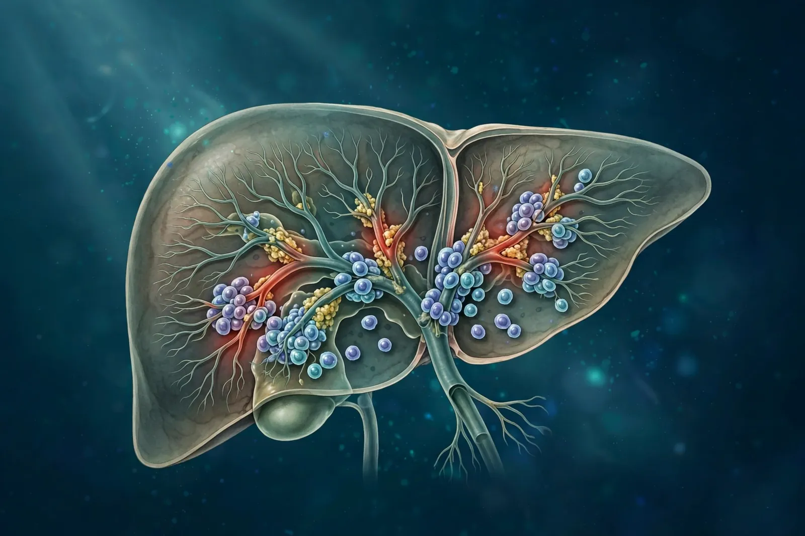

01
A disease of the bile ducts
The immune system destroys small and medium intrahepatic ducts, not hepatocytes. Bile fails to drain, bile acids accumulate, and the liver fibroses slowly.
Access required
This site is shared with selected partners ahead of public release. Enter your access code to view the platform and research material.
Disease brief 07 — Biliary autoimmunity
Immune destruction of small and medium intrahepatic bile ducts lets bile acids accumulate and the liver fibrose slowly. 2024–2026 has been a period of class replacement; the missing evidence is survival benefit.

PBC · Biliary epitheliumThe pooled 18.1 is not a universal constant: heterogeneity is extreme (I² 99.9%).
PBC is bile-duct destruction; the 2024–2026 change is a class replacement; and the outstanding question is survival benefit.
The immune system destroys small and medium intrahepatic ducts, not hepatocytes. Bile fails to drain, bile acids accumulate, and the liver fibroses slowly.
It is an autoimmune cholestatic liver disease. The obsolete name “primary biliary cirrhosis” misleads: most patients are not cirrhotic at diagnosis.
Two PPAR agonists replaced obeticholic acid in second line, a pruritus-specific drug was approved for the first time, and the first drug-centred guideline appeared.
Every recent approval rests on ALP reduction; none has been confirmed to prevent death or transplant.
Seladelpar's confirmatory trial is expected around 2029–2030, deciding whether the PPAR class avoids obeticholic acid's fate.
ALP tracks prognosis, yet no drug has confirmed a mortality or transplant benefit. That gap is the clinical and investment crux.
One sentence decides diagnosis, differential and treatment logic: the autoantigen is mitochondrial PDC-E2, and the antibody is a marker rather than a direct cytotoxin.
| Element | Detail |
|---|---|
| Autoantigen | E2 subunit of the pyruvate dehydrogenase complex (PDC-E2), an inner mitochondrial membrane protein |
| Role of AMA | A marker in 90–95%; not cytotoxic and not the direct cause of duct injury. |
| Actual injury | CD4⁺ and CD8⁺ T cells target biliary epithelium directly. |
| Loss of tolerance | When the bicarbonate-rich apical “umbrella” fails, biliary epithelium becomes prone to abnormal apoptosis, leaving intact PDC-E2 in apoptotic bodies. |
| Consequence | Multi-lineage tolerance loss and dysregulated immunity → cholestasis → ductopenia → fibrosis → cirrhosis |
Up to 80%; it may not track ALP or fibrosis stage.
Sleep deprivation leads to daytime fatigue and then depression.
With both ALP and AMA present and obstruction excluded, biopsy is not mandatory.
Denominator and context matter more than the figure: the pooled global value, the US estimate and the Korean series view one phenomenon through different lenses.
Global pooled 18.1; US about 38; Europe (JGH 2021) 14.6; Korea (2019) 12.32; incidence 1.8.
Median age at diagnosis; onset mainly 40–60
AMA positive — the key diagnostic marker
Women over 45 (upper estimate)
Korean prevalence growth, 2009–2019
Geography, ascertainment and period differ. Values are higher at high latitude, in high-HDI settings and in the US; the Western Pacific is rising fastest.
Incidence 0.86 and prevalence 4.75; do not compare directly with current trends because period and definition differ.
Mean age 46.9 in the 1970s → 57.0 after 2010, largely from screening and earlier detection.
Biochemistry is not just a lab result: it signals transplant and mortality risk. Non-responders are both the rationale and the market for second-line therapy.
Predicts transplant-free survival from age, bilirubin, albumin, ALP and platelets after one year of UDCA.
At 12 months, response is associated with 40% lower decompensation and 26% lower mortality over five years.
In patients with normal GLOBE despite ALP above 2× ULN; 82.6% in those over 50.
Recurrence at 5, 10 and 15 years with prophylactic UDCA; without it, 32 / 53 / 70%. Overall recurrence about 22.4%, median 3.5–6.5 years.
AGA/AASLD 2026 recommends prophylactic UDCA after transplant.
Care starts with UDCA, forks to a PPAR agonist by 12-month response, and treats pruritus on a separate axis.
| Agent | Class / position | Status | Key point |
|---|---|---|---|
| UDCA | First line · all patients | Standard | 13–15 mg/kg/day from diagnosis; recommended by AGA/AASLD 2026. |
| Elafibranor (Iqirvo) | PPAR-α/δ · second line | Accelerated approval 10 Jun 2024 | Added to UDCA, or alone with UDCA intolerance; confirmatory trial ongoing; monitor bone, muscle and liver. |
| Seladelpar (Livdelzi) | PPAR-δ · second line | Accelerated approval 14 Aug 2024 | AFFIRM confirmatory trial expected 2029–2030; fracture 4% vs 0%; not recommended in decompensated cirrhosis. |
| Linerixibat (Lynavoy) | IBAT · pruritus | Approved 19 Mar 2026 | For moderate-to-severe cholestatic pruritus; it does not treat cholestasis or ALP; diarrhoea 61%. |
| Fibrates | Bezafibrate · fenofibrate | Off-label / some guidelines | Considered in some regions; not FDA-approved for PBC; evidence base is small. |
| Obeticholic acid (Ocaliva) | FXR · former second line | Voluntary withdrawal 11 Sep 2025 | Accelerated approval 2016 → COBALT failure → full approval refused Nov 2024 → severe liver injury in non-cirrhotic patients → withdrawal. |
PPAR-α/δ suppresses bile-acid synthesis (lower C4 and total bile acids), strengthens detoxification and transport (glucuronidation, canalicular transporters) and reduces inflammation and fibrosis. PPAR-δ lowers the pruritogenic signal IL-31. It is a different nuclear receptor and bile-acid handling route from FXR.
12-month composite: ALP below 1.67× ULN, ALP reduction of at least 15% and normal bilirubin; ALP normalisation 25% vs 0%.
Patients with ALP 1–1.67× ULN; ALP normalisation at 52 weeks; reported November 2026.
80 mg once daily; 52-week composite response; ALP normalisation 15% vs 0%.
Patients with ALP 1–1.67× ULN; ALP normalisation at 52 weeks.
1 mg once daily; 52-week composite; ALP normalisation 8.2% vs 0%; PDUFA 27 Nov 2026.
Difference in 24-week monthly itch score (−2.86 vs −2.15, p=0.001), with improved sleep.
2026 was not a year of disease-modifying drugs; the only new approval treats itch. The next value is not a fourth ALP agent.
Zydus · PPAR-α/γ
PDUFA 27 Nov 2026 — not an approval. The 60.7 percentage-point US subgroup difference versus 41.6 points outside the US is a post-hoc exploratory analysis.
Calliditas / Mirum · NOX1/4
Targets fibrosis directly; it is not a bile-acid synthesis inhibitor. 52 weeks plus a 52-week extension; results awaited.
GSK / Alfasigma · IBAT
Symptom therapy, not disease modification; also approved in the EU.
IBAT
Later entrants on the same IBAT logic.
GABAergic
The only candidate aimed mechanistically at fatigue; success would change quality of life rather than a lab value.
PPAR / bile acid / immune
CS0159, HPG-1860, norursodeoxycholic acid, RhuDex and DF-5112; no pivotal evidence yet.
Do PPAR agonists actually prevent death and transplant?
Does setanaxib change fibrosis directly?
Does golexanolone change quality of life?
2025 estimates range from $0.96B to $2.12B — a 2.2-fold spread. A single figure hides the definition.
2035 · CAGR 5.98%
2035 · CAGR 7.7%
2034 · CAGR 9.2%
2030 · CAGR 8.7%
2032 · CAGR 10.3%
2035 · CAGR 10.0%
A $150M quarter annualises to roughly $600M — still far from $4.3B. That gap is the investment hypothesis: either PPARs become chronic therapy for a growing diagnosed pool, or $4.3B was the price of a niche second-line agent with confirmation risk.
The thesis is not whether another ALP drug appears, but whether confirmatory evidence arrives.
Report date 25 November 2026. Saroglitazar's PDUFA of 27 November 2026 falls two days later — it is not treated as an approval.
General information only, not medical advice. Market figures depend on definition and source. Verify primary material before IR use, and leave treatment decisions with the treating clinician.
The Nextab, Inc. Th1 programme is preclinical; this brief does not claim validity of the programme in this indication. Report date 25 Nov 2026.